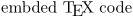

< Latin Modern | Fulfilled or rejected wishes for Latin Modern >
This list contains wishes for future versions of the Latin Modern font family.
In de.comp.text.tex, there has been a discussion about the Latin Modern font family that is developed by Bogusław Jackowski aka Jacko, B.Jackowski@gust.org.pl, and Janusz M. Nowacki, jnowacki@uck.uni.torun.pl.
The content was moved from http://www.tug.org/tex-archive/info/lmodern/lmodern.html to this page with agreement with Harald Harders (h.harders@tu-bs.de) who kindly maintained that page during the most active years of developent of Latin Modern and was now looking for a new maintainer. Hopefully this wiki can offer a good-enough shelter for comments and proposals how to make the Latin Modern font family even better than it already is.
"Anyone" can add items on this list, you can also upload figures and/ore use
- 
to ilustrate your wish (see Wiki:Editing). This list of already fulfilled and rejected wishes is kept here: Fulfilled or rejected wishes for Latin Modern.
New items
- Ǝ for XeTeX
- assign "U+2423 OPEN BOX" to "visiblespace"
- move IJ ligature to language-specific features
- Leah (2022-09-23) : A capital sz would be good to have: ẞ
Kerning
- Jacko/Janusz (2004-04-16) : All kerning has been prepared from scratch.
-
Ralf Stubner
,
Harald Harders
(2004-07-19): Kerning around quotation marks is problematic, see
lm-kerning-092.pdf
and
lm-kerning.tex
. Note the large corrections needed for
quotedblleftwhen it is used as German style right quotation mark. This is caused by the horizontally not centeredquotedblleft. There is a simple solution by usingquotedblleft.altetc. which are horizontally centered. We do not see any disadvantage in using these, even not for English texts.
- Oliver Heins (2004-11-26): Kerning between the bold and roman letters ‘t’ and ‘l’ seems to be too big. Especially the bold version is very ugly. Both italic and bold-italic are okay. See lmodern-tl.pdf and lmodern-tl.tex .
Text fractions
-
Harald Harders
: Superior and inferior digits, comma, and period for arbitrary textfractions similar to textcomp's
\textonehalfshould be added. The solidus exists called ‘fraction’ (Thanks to Morten Høgholm ).- Jacko/Janusz (2004-04-16) : Not touched yet.
- Morten Høgholm (2004-04-16): It would be great if the ‘solidus’ could have a fake length so that you wouldn't need to kern all the time; just like it is in the Adobe fonts.
Single glyphs/ligatures
-
[h.harders@tu-bs.de Harald Harders]: I like the μ that is a mixture from the u and the p, as it is in cm-super (with serifs), more than the Latin Modern μ which does not have serifs at all. But this topic seems to be controversial. [stefan-ulrich.nntp@zen.co.uk Stefan Ulrich] does not agree. He thinks that most greek fonts don't have a serif at the descender of the
\textmu.- Jacko/Janusz (2004-04-16) : Not touched yet.
-
Gerrit Kirpal
: The degree symbol
\textdegreeshould have the same size as the degree sign in degree celsius\textcelsius. It should be slightly larger than used in\textcelsiusbut much smaller than in\textdegree. A ratio of 2/5 between the diameter and the height of capitals would be nice (in\textcelsius, it is 1/3 while it is 1/2 in\textdegree).-
Harald Harders
: I fully agree. The
\textdegreereally is ugly in Latin Modern . In addition, the outline of the ball in\textdegreeis too thin. - Jacko/Janusz (2004-04-16) : We also agree that the present state of the art is unacceptable. Will be touched as soon as possible.
-
Harald Harders
: I fully agree. The
-
Gerrit Kirpal
: The circled text symbols are better than in cm-super, but they have too thin outlines.
- Jacko/Janusz (2004-04-16) : Not touched yet.
-
Harald Harders
: The
\pmis ugly. The original CM version is much nicer. At least, the ‘+’ part of the sign should be symmetrical.- Jacko/Janusz (2004-04-16) : Hardly implementable to full extent. Knuth constructs plusminus by shifting plus so that its bottom touches the baseline and next places a bar (minus) on the baseline. This works for circa half of the LM family. In the rest of fonts the glyph would be too high (most notably in LMBX5, LMBX6, LMSSQBX8 and LMSSQBO8). We decided that the resulting glyph should not be higher than ascender height; if it would, we decreased its height par force.
-
Christian Ebert (2004-01-16)
: Some design sizes are not displayed correctly in Acrobat Reader (at least version x86 linux 5.0.5), e.g., the ‘A’ in 10pt is printed below the baseline (
lm10pt.tex
,
lm10pt.png
); the ‘i’ in 11pt is printed above the baseline (
lm11pt.tex
,
lm11pt.png
).
- Andreas Lobinger (2004-01-16) : This may occur due to wrong hinting.
- Jacko/Janusz (2004-04-16) : Not touched yet.
{kind=link}
{kind=link}
-
Ralf Stubner (2004-03-12)
: The umlauts in ä, ö, and ü as well as in Ä, Ö, and Ü should be at the same height as in the EC fonts. This height is a compromise between the default placement in the CM fonts and the placement in the CM fonts with (n)german. Example:
umlauts.pdf
,
umlauts.tex
.
- Jacko/Janusz (2004-04-16) : Not touched yet. We wanted to consult the matter with Hermann Zapf (there was a little chance) but we haven't managed to arrange the meeting.
-
Arni Magnusson (2004-04-16): Thanks for creating the lmodern fonts. Icelandic LaTeX users have been using cm-super to render the Þ (thorn) and Ð (eth) characters in type 1, and although cm-super does a fine job, lmodern seems like a cleaner solution to the Þ and Ð problem.
I understand you are still working on the fonts, and I'd like to offer my comments on issues specific to Icelandic characters. If you open the three attached PDF documents (not provided here, Jacko does have the examples), you will notice mainly three differences:
- the upper case Þ should carry its belly higher in lmodern,
- the comma over the ú should have a lower angle, and
- the neck of the ð should be bent further down.
- Knuth's bitmaps and cm-super look similar to books printed in Iceland.
- The kerning is also an issue, in light of Knuth's original goal, described in the TUGboat 21(2): "the rendering [should] be the same in ten years [...] on everybody's machine it [should] come out the same, not only now but in the future." An ambitious goal, but at any rate, the smaller the kerning differences, the better.
- Morten Høgholm (2004-06-11): At this years BachoTeX I talked to Boguslaw about adding some more ligatures to Latin Modern, as we in Danish really need fj. At http://www.eur.nl/fw/staff/lokhorst/metafont.html a lot of ligatures are shown, although not all of them are particular nice. He promised to look at it. (When you have the standard fi and ij ligatures, you would also think there should be an fij, right? In polish they have a common flower named ‘fijolet’ making Boguslaw even more eager to add it... The Dutch use it in common words as ‘fijn’ as well.) I guess this calls for a special fontencoding for Danish users. Harald Harders: There are some good ligatures. But for example the fff ligature is useless in German. You should be careful in adding new ligatures.
- Martín Darío Safe (2004-07-05): When using the lm package version 0.92, almost all occurrences of ‘ij’ and ‘IJ’ in your document will output ij and IJ Dutch digraphs. This seems inadequate for all European languages but Dutch. Also, this behaviour can prevent you from copying and pasting, searching, and indexing words containing ‘ij’ on PDF files for non-Dutch texts. More description about that topic at http://www.mdsafe.com.ar/ijdigraphissue.htm .
- Eckhard Neber (2004-07-09): I asked on dctt why the glyphs of scedilla and tcedilla are different from the others and was pointed to http://www.tug.org/tug2003/preprints/Jackowski/jackowski.pdf It says that this is a feature following the rules of the Romanian language, but referring to http://www.evertype.com/alphabets/turkish.pdf it is handled differently in Turkish. Is there a possibility to have both variants?
- Ralf Stubner (2004-07-17): Similar to [sS]cedilla, [tT]cedilla should really be a [tT] with cedilla below. Both, [sS]cedilla and [tT]cedilla should be used in T1/Cork encoding, as the turkish [sS]cedilla would not be available otherwise, and using [sS]cedilla and [tT]commacent at the same time would be inconsistent. [sS]commaacent and [tT]commacent are still available via the QX encoding. Also, the EC fonts, which can be seen as reference implementation of the T1/Cork encoding, use [sS]cedilla and [tT]cedilla.
- Ramón Casares (2005-06-01): The Latin Modern fonts are really needed in Spanish, so I am following its development with much interest. One thing I have notice, comparing last year printings – from August to be more precise – with printings done with the new version, is the horizontal placement of the acute accent. In the last year printing, the acute accent was a little bit to the right, but acceptable. The current version is too much to the left. And, in the case of the í, is imposible for me not to notice it every time I read it. So I would suggest to use the Computer Modern model to place the acute accent, which is just where it should.
-
Stephan Hennig (2005-03-08): In thread "Italicalized old-style figures" from 2004-09-08 on comp.text.tex there has been some agreement to the opinion CM's old-style figures do look ugly. Is it possible for LM to provide nicer old-style figures?
As I'm completely ignorant about font design I don't really know what makes CM's old-style figures look so boring. And I don't know if a complete redesign would be necessary to get nicer ones. Maybe just slanting the current old-style digits slightly could make the single digits look more individual and less obstrusive?- Harald Harders : I think only a complete new design would help. For instance, the 1 and 3 normally really look different in lining and old-style figures which they don't for LM. Slanting is wrong in my opinion.
- Thomas Zell (2010-06-22): The hinting of the capital "W" seems to be broken for example in lmr10. Acrobat Reader paints the diagonal lines way too thick. I edited the font in FontForge and removed all of the horizontal hints which seemed oddly placed to me (leaving only one at the bottom) and the "W" looked fine. Could this be due to a bug in Metatype1?
General things
-
Harald Harders
: Virtual fonts or font encodings for usage of old-style digits (similar to the eco package). Small Caps should either use old-style digits or get extra lining digits with a height that fits to the ‘minuscles’.
- Jacko/Janusz (2004-04-16) : Not touched yet. Help is welcome. But remember that each new encoding means a new set of TFM files.
-
Harald Harders
: I would like proportional digits in addition to the table digits with same width which are provided up to now.
- Jacko/Janusz (2004-04-16) : Not touched yet.
-
Harald Harders
: I think
Latin Modern
should have a full set of Small Caps fonts including bold series, italic/slanted shape as well as the sans serif and type writer families.
For the roman (serif) family of Latin Modern, the bold extended small caps font shapes are missing (‘LMCaps##-Bold’ and ‘LMCaps##-BoldItalic’).- Jacko/Janusz (2004-04-16) : Nice idea, although it would require a lot of work (see the remarks concerning the preparing of the bold typewriter variant). But it should be considered seriously, as Knuthian small caps are hardly usable in the context of OpenType fonts (see below). So, perhaps adding alternative small caps makes sense.
-
Harald Harders
: The slanted small caps font shape ‘LMCaps##-Italic’ is present, but it is not prepared to be used by LaTeX. With the package
slantsc.sty
, slanted small capitals can be used, if the corresponding
fdfiles contain entries for font shapesscslandscitfor slanted and italic font shapes, respectively.t1lmr.fdalready includes the font lmr/m/scsl (Normal weighted slanted small capitals). For the italic shape, a substitution could be defined:
\DeclareFontShape{T1}{lmr}{m}{scit}{<->ssub * lmr/m/scsl}{}.
-
The same should be done for new small caps shapes (sans serif, bold, etc.).
- ' Jacko/Janusz (2004-04-16) : Not touched yet. We'll try to prepare the relevant files in the next release.
-
[h.harders@tu-bs.de Harald Harders]: Cpa files for supporting the package pdfcprot should be added (2003-11-26).
- ' Jacko/Janusz (2004-04-16) : Not touched yet. Help welcome.
-
Michael Zedler
(2004-01-15): Build an
OpenType
version of
Latin Modern
. Then, SC, OSF, special ligatures etc. were included and accessable from DTP programmes.
- Jacko/Janusz (2004-04-16) : We work on it, but the task is not trivial. For example, metric files for cmr10 and cmcsc10 differ significantly. Compare the two excerpts from AFM files:
- cmr10.afm:
C 65 ; WX 750 ; N A ; B 32 0 717 716 ; C 66 ; WX 708.333 ; N B ; B 36 0 651 683 ; C 67 ; WX 722.222 ; N C ; B 56 -22 665 705 ;
- cmcsc10.afm:
C 65 ; WX 813.879 ; N A ; B 48 0 765 716 ; C 66 ; WX 770.824 ; N B ; B 58 0 698 683 ; C 67 ; WX 786.102 ; N C ; B 72 -22 713 705 ;
-
Small caps are circa 10% wider; therefore, cmcsc10 and cmr10 cannot just be joined into a single
OpenType
font with small caps available through the ‘smcp’ feature.
- Peter Dyballa (2004-11-25): Will Robertson has prepared an OpenType version of the Latin Modern fonts (for usage with XeTeX ): http://www.mecheng.adelaide.edu.au/~will/tex/
-
Make
Latin Modern
fonts usable with Mac computers (2004-01-16).
- ' Jacko/Janusz (2004-04-16) : Once we have OpenType fonts the problem will be solved, will it not? Needs time, however. (I don't know if this is an official work.)
- Harald Harders (2004-07-09): The lmodern.sty style file should get the same version number and date as the Latin Modern fonts and a description what it does, e.g.,
\ProvidesPackage{lmodern}[2004/04/14 v0.92 Latin Modern fonts]
- Juhapekka Tolvanen (2004-08-24): It would be nice, if Latin Modern would include also those fonts of Computer Modern Bright. Right now the only free (in the sense of freedom) version of Computer Modern Bright in Type 1 format is in that awfully big cm-super package and hfbright package.